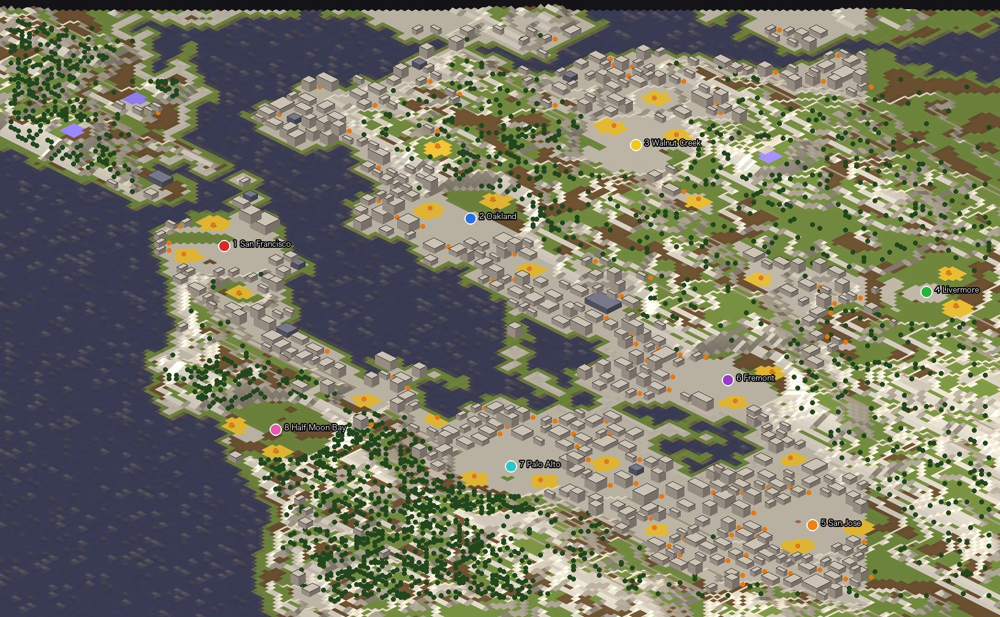

AI for Software and Systems
- SciRecast - Agentic system for modernizing legacy scientific software
- RecastEngine - Reusable modernization engine that checks every translation against the original
- freeCAM - Interactive, AI-augmented atmosphere modeling lab driving CAM from Python
- PyCAM5 - LLM-agent-enabled Python modernization of CAM5, bit-for-bit with Fortran
- NeoCESM - Python/JAX redesign of CESM3, bit-for-bit with Fortran on CPUs and running on GPUs
- xTier - In-kernel machine-learned page placement for DRAM/CXL tiered memory
- CLExtract - Contrastive learning framework recovering highly corrupted DVB/GSE satellite streams
Quantum Systems
- CoDecoder - Learning-based decoder for quantum error correction, up to 100x faster and more accurate
- QEC-Bank - Machine-checked dataset of quantum error-correcting codes
- QEC-Bank-Academy - Interactive tutorials on quantum error-correcting codes, in Chinese and English
- Ant-Q - Memory hierarchy design on RFSoC for quantum control. Integrated with QubiC
- RISC-Q-4x2 - RISC-Q pulse control on the AMD RFSoC 4x2 board with an ARTIQ-style Python interface
- QEX - Quantum method for boundary checking in classical programs
Software Security
- Lancet - Formalization framework for exploit analysis
- SeaK - eBPF-based secure allocator design for OS kernel
- O2C - eBPF-based fault isolation framework for on-the-fly kernel compartmentalization
Side Projects
- Cheapie - Claude Code plugin that stacks every way to save on a restaurant bill
- RA2-Map - Generator of Red Alert 2: Yuri's Revenge multiplayer maps from real-world terrain data

San Francisco Bay Area, generated by RA2-Map
|